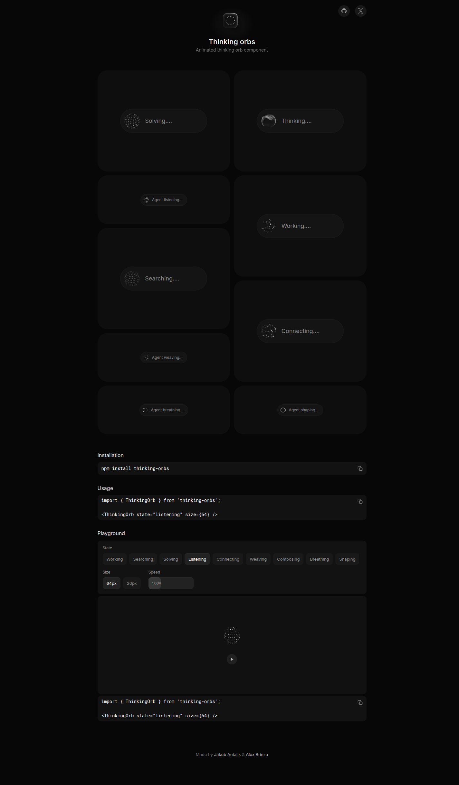

REACT / CANVAS · 1,569 Stars · MIT
thinking-orbs
AI Agent 思维球 Loading 指示器：9 种手调动画状态，两个独立尺寸，Canvas 2D 绘制，自动适配明暗主题。
9 Animated States2 Tuned SizesCanvas 2DAuto Dark/Light
orbs.jakubantalik.com

1
NINE STATES
9 种 Agent 思维状态，各有独特动画
working
64px · chat avatar
倾斜轨道上的粒子绕行，暗示持续运算
searching
64px · chat avatar
扫描经线扫过大点球体，暗示信息检索
solving
64px · chat avatar
色带先混乱然后扣回，暗示问题解决
listening
64px · chat avatar
波纹从内向外扩散，暗示正在倾听
connecting
64px · chat avatar
星群自连成线，暗示建立连接
weaving
64px · chat avatar
三根丝线缠绕球体，暗示编织整合
composing
64px · chat avatar
多段横带起伏摆动，暗示创作输出
breathing
64px · chat avatar
光环缓慢形变呼吸，暗示待机等待
shaping
64px · chat avatar
点线轮廓循环变形：圆→三角→方块，暗示塑造
2
SIZE TUNING
两个尺寸是独立设计，不是简单缩放
64px
Chat Avatar 尺寸
为对话气泡中的头像级指示器调优：更大的点距、更多的点、更慢的速度，适合放在消息时间轴旁边。
20px
Inline Text 尺寸
为行内文字旁的小型 Loading 调优：点更小、间距更紧、速度更快，适合按钮内或段落结尾。
3
THEME
自动适配明暗主题，三层检测
CSS Data Attribute
data-theme="dark"
Tailwind / shadcn 惯例
MutationObserver 监听变化
OS Preference
prefers-color-scheme
订阅系统主题切换
实时响应
SSR Safe
Canvas 仅在客户端渲染
服务器端不绘制
避免水合不匹配
4
INSTALL & USAGE
一行命令，即插即用
npm install thinking-orbs
import {'{ ThinkingOrb }'} from 'thinking-orbs';
<ThinkingOrb state="searching" size={64} />
<ThinkingOrb state="listening" size={20} />
<ThinkingOrb state="solving" size={64} speed={1.5} />5
PERFORMANCE & ACCESSIBILITY
无滤镜、无 WebGL、跨浏览器一致
2D Canvas Only
纯 Canvas，无滤镜
只用 ctx.arc 画弧线，不使用 ctx.filter / SVG filter / WebGL。同一像素在 Chrome、Safari、Firefox 完全一致，低端设备友好。Device pixel ratio 上限 2。
ARIA & Reduced Motion
无障碍 + 节电
role="img" 配 per-state 默认 aria-label。prefers-reduced-motion 渲染静态代表帧。可视区域外和标签页隐藏时自动暂停（IntersectionObserver + Page Visibility API），恢复时相位保持对齐。
来源：GitHub · Jakubantalik/thinking-orbs（1,569 ★ · 118 Forks · MIT · TypeScript · v0.2.0）· Live Demo · 作者：Jakub Antalík & Alex Brinza
注意：本卡 SVG 演示为静态示意，实际动画效果请访问 Live Demo 体验完整 Canvas 动画。